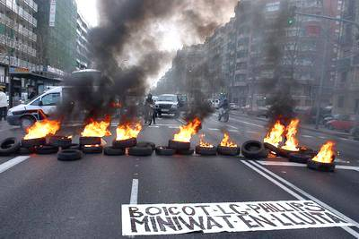

|  |
 |
 |
|
||||
|
El passat dimarts 6 de setembre es va conèixer finalment la sentència absolutòria per 8 de les 9 persones detingudes en l'acció de solidaritat amb els i les treballadores de Miniwatt que tingué lloc el 22 de març d'enguany. L'altra persona, una jove menor d'edat, ja havia rebut notificació d'arxivament del cas el passat mes de juny. La llarga espera havia fet témer el pitjor als i les encausades, que han respirat alleugerides en conèixer la sentència que els absol del delicte de desordres públics, tot i que la fiscalia encara pot interposar un recurs. Però per més sorpresa, la sentència de la magistrada que portava el cas deixa en clara evidència a la Policia espanyola, donat que es consideren alguns testimonis com a falsos i alerta d'una possible declaració orquestrada des dels despatxos. Així doncs, sembla cobrar veracitat el que denunciaven les persones detingudes: que va ser una actuació de la Brigada d'Informació de la Policia espanyola, tot intentant reprimir la solidaritat amb la lluita dels i les treballadores de Miniwatt. Així, la sentència de la jutgessa afirma que no consta provat que els detinguts participessin en el tall de la Gran Via amb Moianès; alhora, la jutgessa nega que l'actuació de totes les persones acusades fou en grup i amb clara intenció d'alterar la pau social. A més, considera les versions de les acusades confirmades per alguns dels testimonis no policies. Cal remarcar especialment
que la sentència considera que dels "testificals dels agents se'n desprenen
contradiccions importants pel que fa a qui va detenir a qui", i cita
que els policies 74.321 i 90.648 asseguren haver detingut a la mateixa
persona però en circumstàncies diferents, i alhora es contradiuen amb
el testimoni del policia 74.982 que assegura haver detingut a persones
diferents amb un dels mateixos policies. La jutgessa destaca, a més,
que és "significatiu que a cap d'ells se'ls incauta cap objecte tipus
encenedor o líquid inflamable". |
La sentència prossegueix afirmant que "igualment, els agents es contradiuen en el itineraris seguits" respecte la detenció de dues persones, afirmant que l'explicació de la policia no té sentit i que "per tant sí que els perderen de vista". En aquest mateix sentit, també la declaració del policia 89.929 va ser un plegat de contradiccions. Finalment, la sentència destaca la contradicció entre tots els agents sobre si el carrer estava tallat en un o dos sentits, i que no s'ha provat que hi haguessin contenidors, com ells afirmaven. La perla final de la sentència és la que confirma la denúncia de les persones acusades, i diu així: "tampoc sembla coincidir els agents que diuen haver fet les detencions amb els qui diuen els acusats que els varen detenir, en definitiva, sembla més aviat que els qui han testificat, amb una dubtosa memòria i veritat, en realitat no eren testimonis presencials sinó que varen produir alguns de les detencions de forma posterior i a indicació d'altres agents, de paisà, que no han deposat en aquest acte de judici. Funcionaris policials contra alguns dels quals l'acusat XX té interposada denúncia amb causa penal incoada per maltractaments". Totes les persones detingudes han mostrat la seva satisfacció per la sentència així com han agraït el suport que reberen durant la detenció i els dos dies que durà el judici, tant per part d'amics/es, familiars i coneguts/es com sobretot per part del dels i les treballadores de Miniwatt, de la Xarxa Contra els Tancaments i la Precarietat i de gent dels moviments socials en general. No en va, les persones encausades han valorat que l'absolució ha estat fruit d ela immensa solidaritat de la que han gaudit tant els i les treballadores de Miniwatt com les pròpies persones detingudes. Així, el que era un judici polític a la solidaritat s'ha convertit en un pols de força en què les mobilitzacions populars han pogut tòrcer la policia i la justícia capitalistes. Detinguts i detingudes solidàries amb Miniwatt. |
|||

|
|
|
barcelona.indymedia.org/newswire/display/166033/index.php barcelona.indymedia.org/newswire/display/166044/index.php barcelona.indymedia.org/newswire/display/166048/index.php |
|||
|
|
|
|||
Tornar